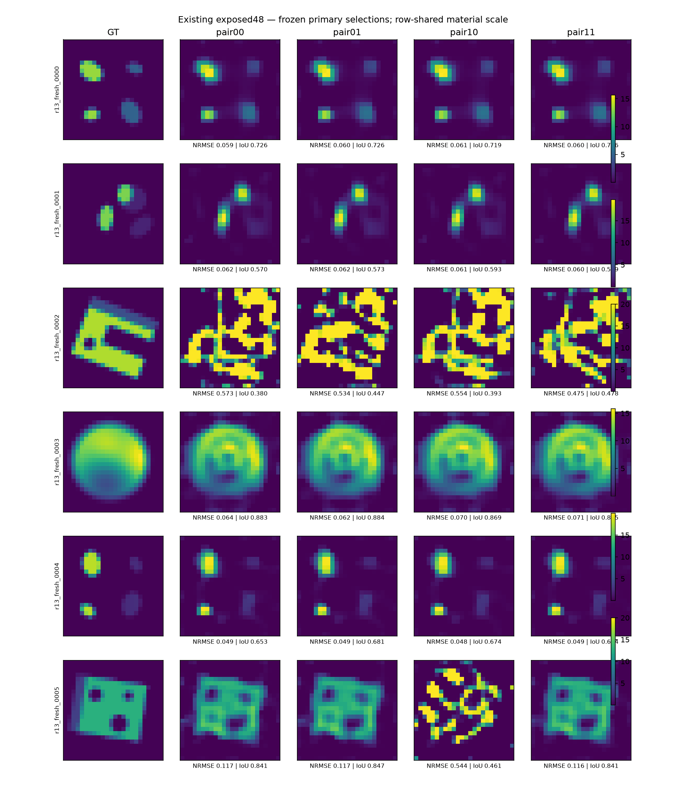
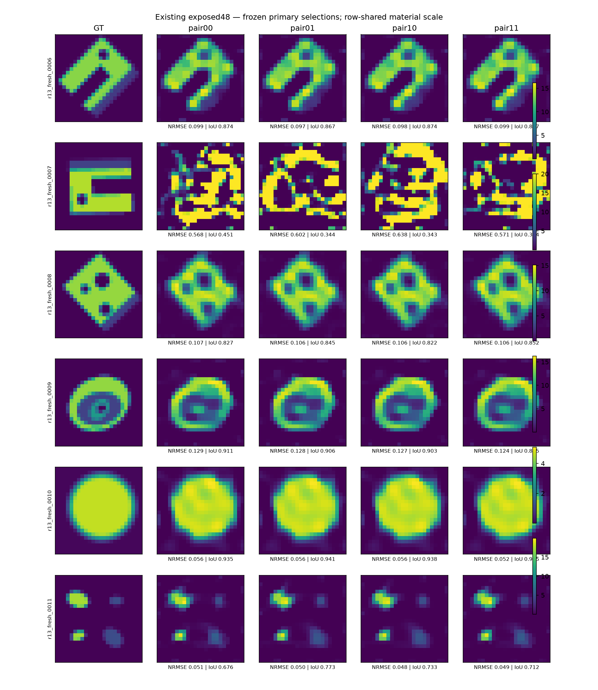
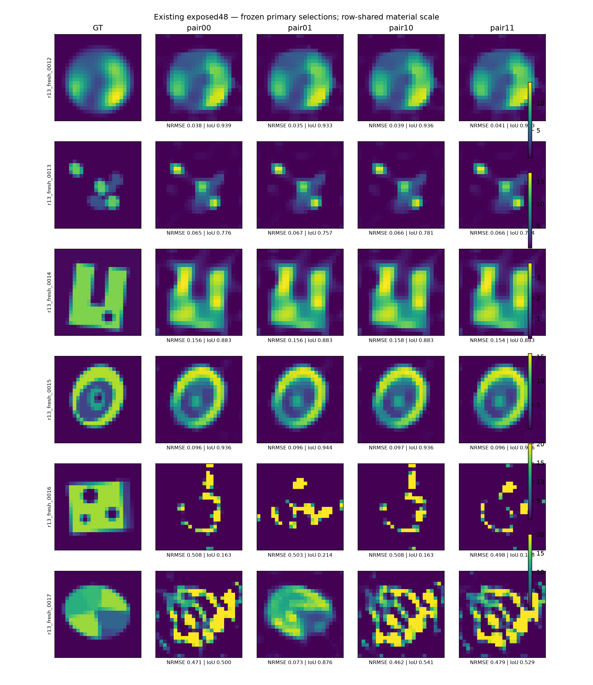
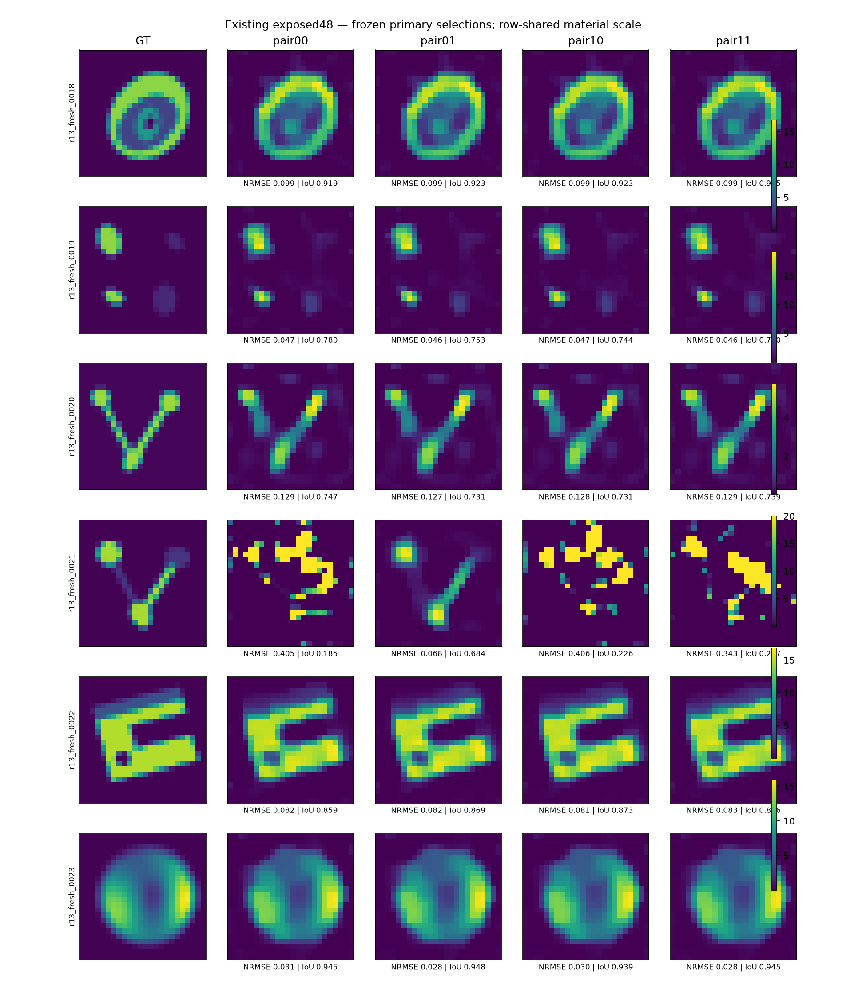
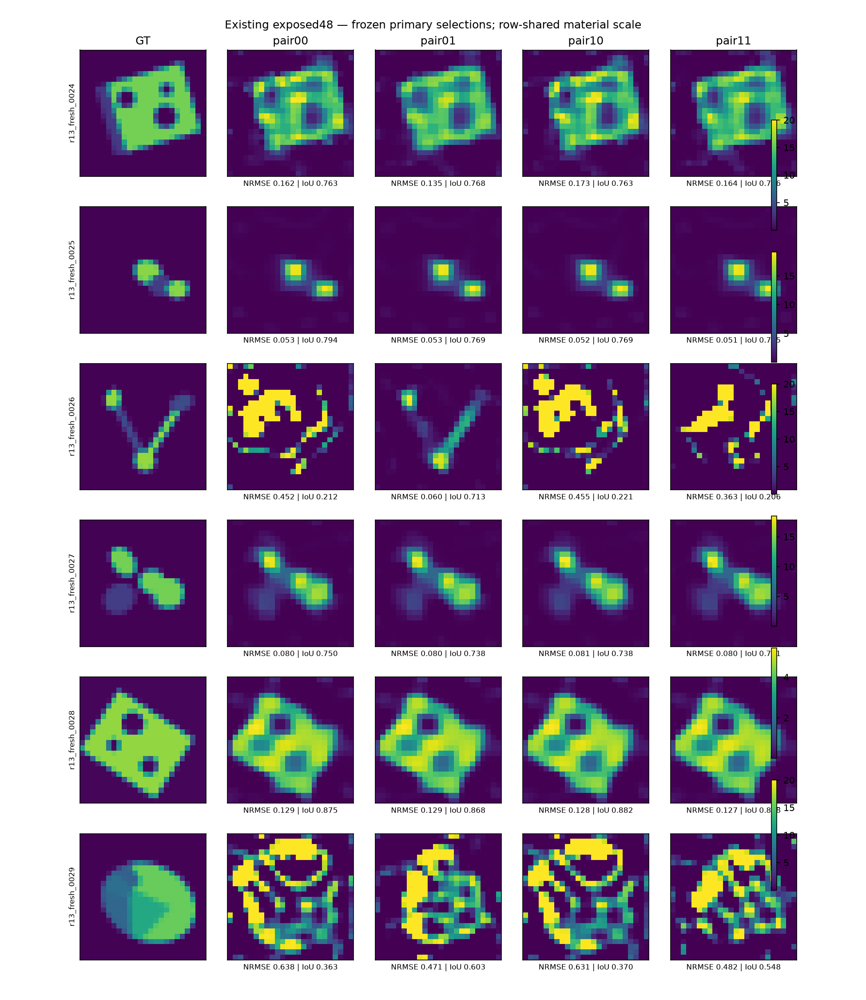
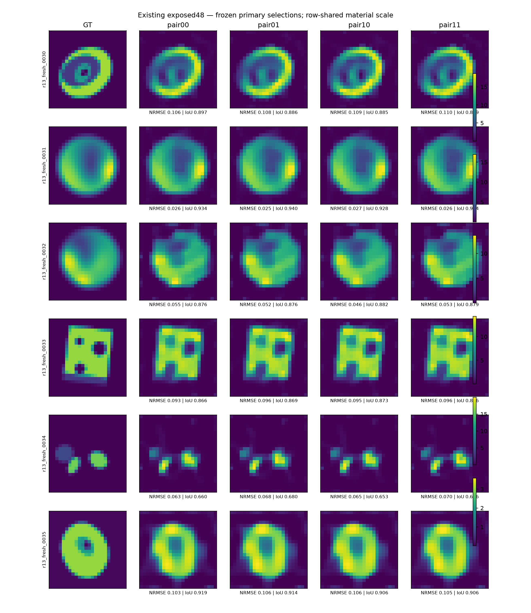
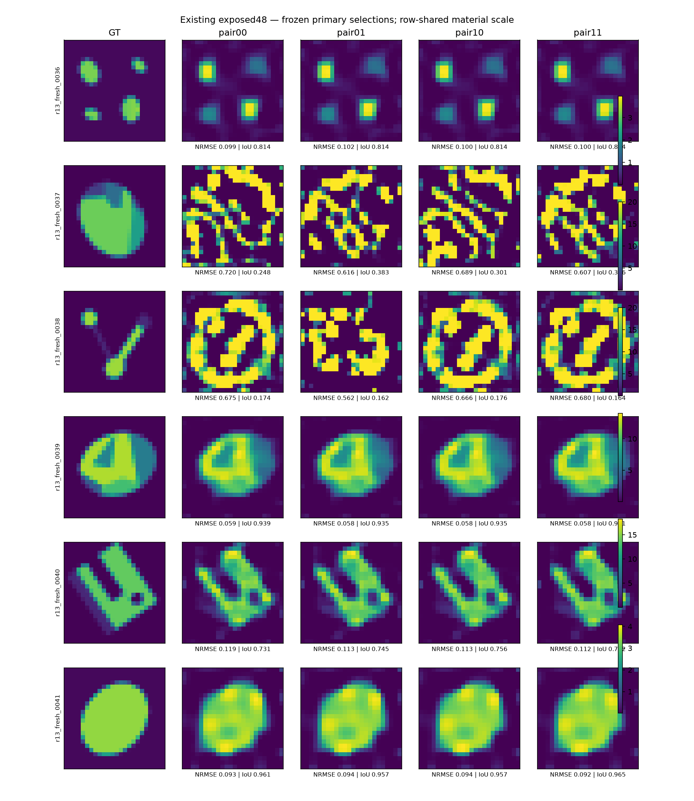
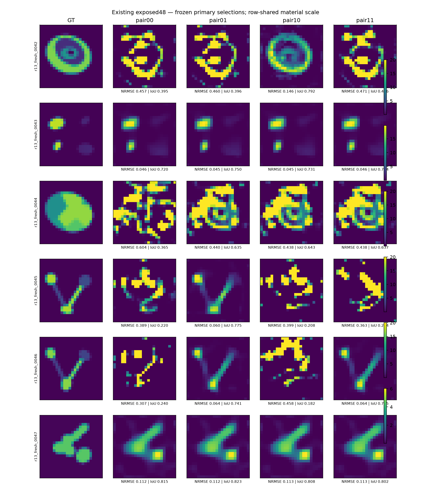
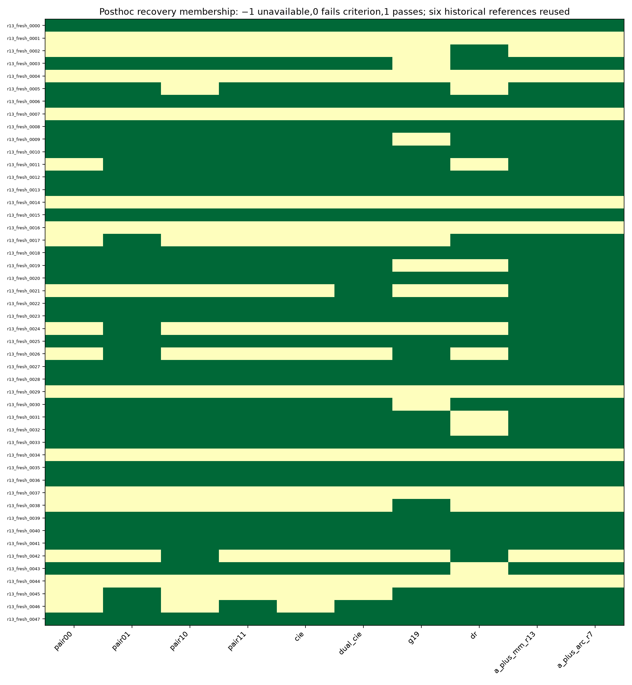
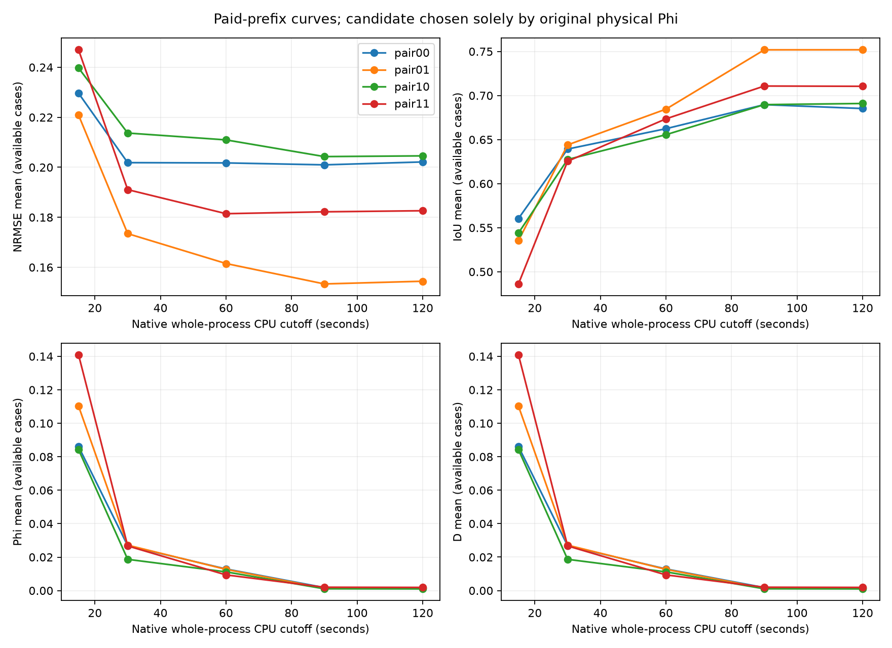

四组合的新封存预测与六组历史 uniform48 primary 参考。科学结论由主线程复核。所有缺失/失败仍保留48分母；历史数据并非新盲测。
预算偏差：新四臂采用总CPU120、可重分配proposal空余时间；旧C2参考corrector最多48秒。原48口径只作已支付候选池的保守上下界截取，不是实际重跑；全部费用保留。
NRMSE≤.15 且 IoU≥.70 仅为事后描述性统计；从未用于候选选择。连续误差、原始物理目标、噪声球资格及费用分别列出。
| Method | Available/48 | Posthoc recovered/48 | Mean NRMSE | Mean IoU |
|---|---|---|---|---|
| pair00 | 48 | 29 | 0.20214831538012837 | 0.6852661859472765 |
| pair01 | 48 | 35 | 0.15443020298262564 | 0.7519436844657538 |
| pair10 | 48 | 30 | 0.20457794224828826 | 0.6910004955486017 |
| pair11 | 48 | 31 | 0.18262732394356385 | 0.7105057354726871 |
| cie | 48 | 30 | 0.1945359164780224 | 0.6945573018135298 |
| dual_cie | 48 | 32 | 0.17984533048443338 | 0.7159174283411804 |
| g19 | 48 | 30 | 0.16758203911504158 | 0.6857688472283993 |
| dr | 48 | 29 | 0.17671933834812928 | 0.687260322602408 |
| a_plus_mm_r13 | 48 | 36 | 0.15210017110259402 | 0.7506265910285571 |
| a_plus_arc_r7 | 48 | 36 | 0.1521412321898467 | 0.7515254601392979 |
Missing corrected views stay missing; absent secondary uses archived primary with an explicit fallback flag. Common CPU comparisons use native process-clock cutoffs; external child lifetime CPU remains a separate cost.
SUMMARY CSV · JSON







FIGURES/recovery_membership.png

FIGURES/paid_prefix_curves.png


FIGURES/paired_metric_differences.png

FIGURES/common_CPU_prefix_curves.png

FIGURES/external_CPU_costs.png